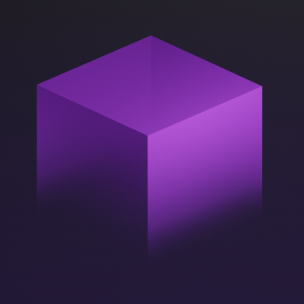
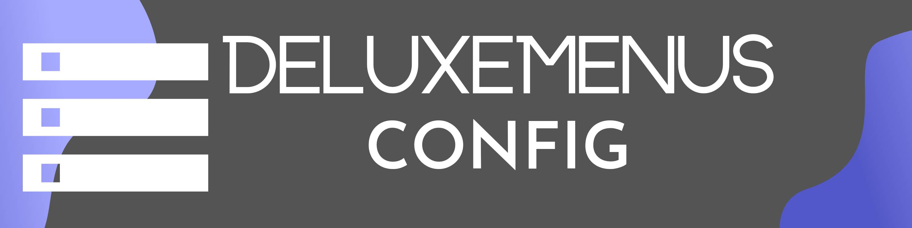

6️⃣ Tworzenie unikalnego serwera

Serwer Minecraft wyróżniający się na tle innych to klucz do sukcesu. W tym rozdziale poznasz sposoby na personalizację rozgrywki – od własnych przedmiotów i bloków, przez NPC i zadania, po efekty dźwiękowe i animacje.

Tworzenie własnych przedmiotów i bloków (ItemsAdder, Oraxen)
✅ 1. Instalacja ItemsAdder
- Pobierz plugin ItemsAdder
- Wrzuć plik .jar do folderu plugins
- Uruchom serwer, aby wygenerować pliki
- Edytuj plik config.yml i dostosuj ustawienia
✅ 2. Tworzenie nowego przedmiotu
Przejdź do plugins/ItemsAdder/content/yourpack/items/ i stwórz plik np. custom_items.yml:
info:
namespace: reimaginedcraftaddon
items:
custom_sword:
display_name: "§6Miecz Feniksa"
resource:
material: DIAMOND_SWORD
model_path: "items/custom_sword"
lore:
- "§7Legenda mówi, że został wykuty z ognia Feniksa."
durability: 1500
attributes:
mainhand:
attack_damage: 10
attack_speed: 1.2Załaduj nowe przedmioty:
/iazip
/reloadOdbierz przedmiot komendą:
/iaget reimaginedcraftaddon:custom_sword✅ 3. Tworzenie nowego bloku
Przejdź do plugins/ItemsAdder/content/yourpack/blocks/ i stwórz plik custom_blocks.yml:
info:
namespace: reimaginedcraftaddon
blocks:
glowing_stone:
display_name: "§eŚwiecący Kamień"
resource:
material: STONE
model_path: "blocks/glowing_stone"
light_level: 15Załaduj zmiany i odbierz blok:
/iaget reimaginedcraftaddon:glowing_stone
Dodawanie NPC i zadań (Citizens, BetonQuest)
✅ 1. Instalacja Citizens
- Pobierz plugin Citizens
- Wrzuć plik .jar do folderu plugins
- Uruchom serwer
✅ 2. Tworzenie NPC
/npc create Kowal
/npc skin Steve
/npc text add "Witaj, podróżniku! Mam dla Ciebie zadanie."✅ 3. Instalacja BetonQuest
- Pobierz plugin BetonQuest
- Wrzuć plik .jar do plugins/
- Uruchom serwer
✅ 4. Tworzenie prostego zadania
W folderze BetonQuest/quests/ utwórz plik kowal.yml:
npc: 1
conditions:
not_started: "!kowal_started"
events:
start_quest: "tag add kowal_started"
give_sword: "item give custom_sword:1"
complete_quest: "tag add kowal_completed"
dialogs:
1:
text: "Hej, przynieś mi 10 żelaza, a dam Ci nagrodę!"
event: start_quest
2:
text: "Dziękuję! Masz tu Miecz Feniksa."
condition: not_started
event: give_sword complete_questPołącz NPC z zadaniem:
/npc select 1
/quest assign kowal

Personalizacja menu i GUI (DeluxeMenus, CustomGUI)
✅ 1. Instalacja DeluxeMenus
- Pobierz DeluxeMenus
- Wrzuć plik .jar do plugins/
- Uruchom serwer
✅ 2. Tworzenie menu
W folderze DeluxeMenus/menus/ utwórz plik sklep.yml:
menu_title: "&aSklep"
size: 27
items:
"slot_13":
material: DIAMOND
display_name: "&bDiament"
lore:
- "&7Cena: 100$"
left_click_commands:
- "[console] eco take %player% 100"
- "[console] give %player% diamond 1"Otwieranie menu:
/dm open sklep
Dźwięki, efekty i animacje
📌 Dodawanie efektów dźwiękowych
/playsound minecraft:entity.wither.spawn master @a📌 Dodawanie efektów wizualnych (MythicMobs, EffectLib)
✅ Tworzenie pierścienia cząsteczek wokół gracza:
Effects:
FireRing:
Type: circle
Particle: flame
Radius: 3
Duration: 5✅ Uruchomienie efektu:
/mm effect FireRing @self